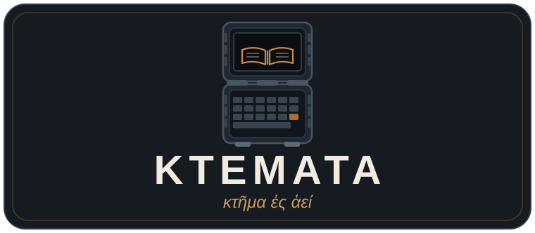
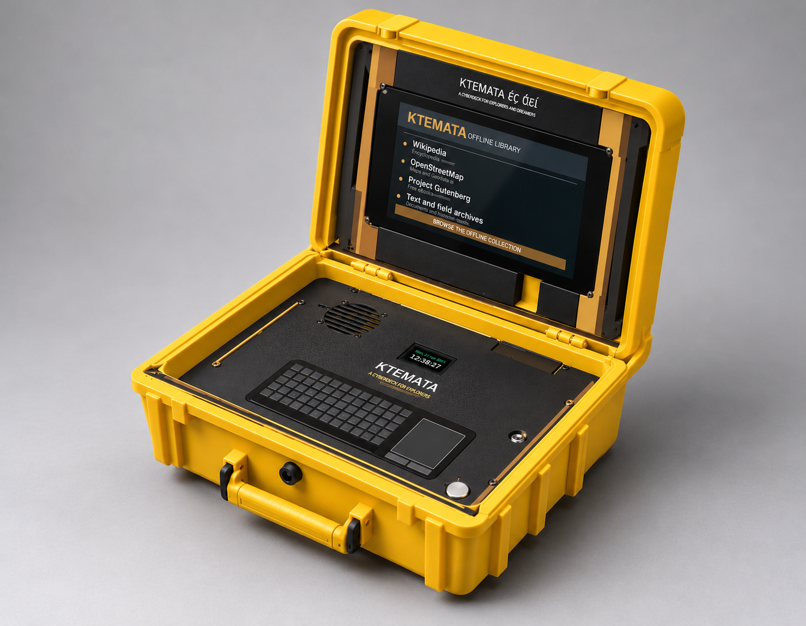

“A possession for all time”
A rugged offline-library cyberdeck with a very low power consumption: Raspberry Pi 5 (4 GB), a 7″ DSI touch display, a Waveshare UPS Module 3S with three 18650 cells, and a compact keyboard in a sturdy case. It keeps Wikipedia, maps, manuals and books on the device — no network, no account, no cloud. Charged by mains, solar or an axial-flux hand crank. The device manages itself from a built-in admin page.

The name
Ktemata (κτήματα) is Greek for “possessions, things owned”. Thucydides opens his History of the Peloponnesian War by calling his work κτῆμα ἐς ἀεί, “a possession for all time”: written down so that what happened stays available to whoever comes later. That is the device’s job.
The build
- Computer
- Raspberry Pi 5, 4 GB
- Display
- Waveshare 7inch DSI LCD (C), 1024 × 600
- Input
- Rii K06 keyboard with touchpad
- Power
- Waveshare UPS Module 3S, 3× 18650 in 3S, 12.6 V / 2 A charge input
- Wi-Fi
- Optional local hotspot for up to 20 clients
- Charge
- Mains, solar or axial-flux hand crank through a 3S regulator
- Content
- Built-in Ktemata Admin; no separate management stack
- AI
- Optional local document and ZIM search through Ollama and KiwixRAG
- Hardware monitoring
- ESP32 + 1.3″ OLED for battery, time and storage status
- Time/date
- DS3231 real-time clock with backup cell
- Inner case
- Custom parametric R6 cassette, printable STLs
- Outer case
- Peli 1200, IP67
KISS
The whole project is based on the KISS principle — keep everything simple. The core is the Pi 5, the 7″ touch display, the keyboard, the UPS Module 3S with three 18650 cells, the SSD and the real-time clock. Everything else has a job and nothing more: the status OLED reads the pack with the Pi off, the Wi-Fi is a local access point with no uplink, and charging is one sealed input. Extra boards, adapters and switches are another point of failure to debug when nothing else works.
Explore
- Build the step-by-step record WIP
- Power what it draws and what the 3S pack gives back
- Admin the management page on the device
- Licence MIT software, CC BY-SA design
- Everything for the device build — geometry, drawings, STLs, renders and notes — lives in the repository: github.com/jsoeterbroek/ktemata WIP
- Everything for the compatible axial-flux hand crank generator build lives in github.com/jsoeterbroek/handcrank WIP
Use at your own risk
This is a hobby project, published as-is, with no warranty of any kind. The case and the wiring information are design proposals, not certified hardware. You are responsible for your own build: check the fit of your parts, verify polarity and fusing before connecting lithium cells, and never leave a charging pack unattended. Anything you print, assemble or power up is at your own risk; the author accepts no liability for damage, injury, data loss or fire.